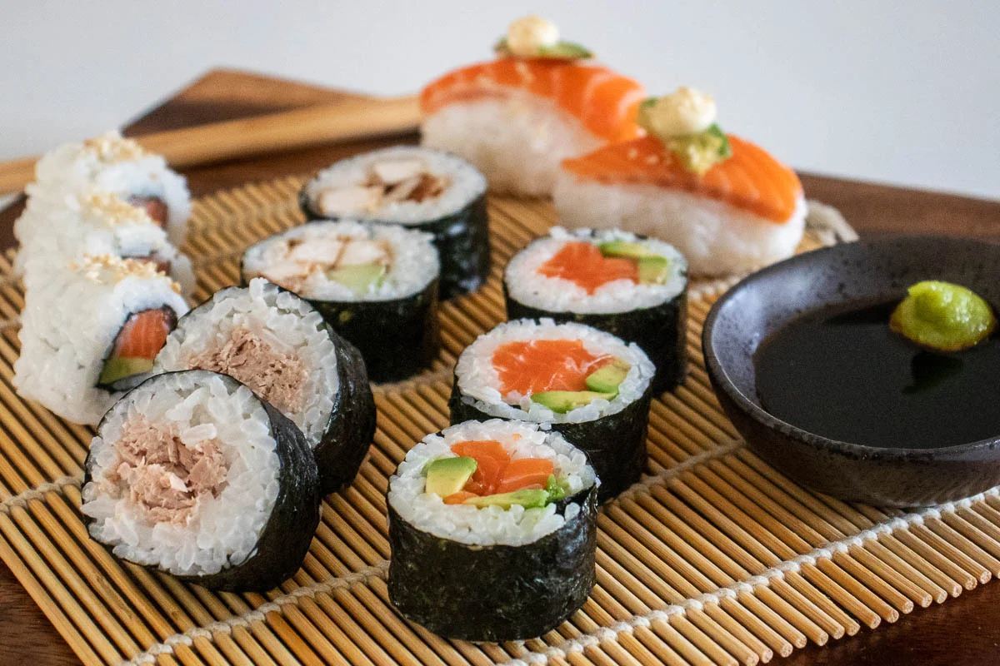
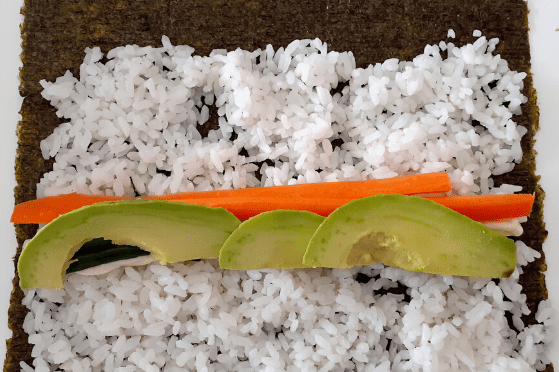

Sushi

Description
A beginner's guide to making sushi. We love sushi, as do our kids and it's easy to make. Homemade sushi makes a great weekend dinner and is always a crowd pleaser. You can make a variety of fillings to meet a range of tastes and dietary requirements. Sushi chefs in Japan take decades to learn their trade, perfecting rice and slicing raw fish. While we can aspire to produce Japanese dishes like the masters, let's start at the beginning, with simple yet tasty homemade sushi.
WHAT U NEED/h6>
- Bamboo sushi mat
- Nori Sheets
- Sushi seasoning
- Rice
MAKING THE RICE
- Take 1 cup of your rice, rinse well in cold water.
- he rice needs to be cooked 1 part rice to 1.5 part water. So place the cup of rice in a pot and add 1.5 cups of water, add the lid and bring to the boil.
- Once its boiling reduce to simmer for around 8-10 minutes but keep an eye on it. You want the rice to absorb all the water but not burn or stick to the bottom on the pot!
- Once the rice is cooked, cool it quickly by spreading it out on a tray, add 2 to 3 tablespoons of the sushi seasoning and mix well. Taste and adjust to your preference.
HOW TO MAKE A MAKI ROLL
- Place your nori sheet longest edge at the bottom, shiny side facing down. You can place this on the sushi mat to help you roll it but you don't have to at this stage. Wet your hands to prevent the rice from sticking, then place a thin layer across the sheet leaving about an inch gap at the top.
- Add your filling of choice, we love tuna, teriyaki chicken or salmon with avocado and/or cucumber. Or a vegetarian roll with capsicum (peppers), avocado and carrots.
- Make sure your ingredients are thinly sliced and a similar length, so they can be lined up on the rice. Place your filling half way up the rice and let it hang over the sides, to make sure the whole roll is filled.
